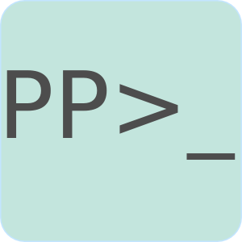

Welcome
This is the home site of the Prescott Programmers meet up group. We meet once a month, usually at Mike's house but sometimes at coffee shops. If you would like to meet up with us join our Google+ Group. If we are meeting at Mike's let me know that you are interested in coming and I'll send you his house address.
If you have any questions feel free to e-mail me.Posts
- F# an Introduction - January 1, 2013
…or you can find more in the archives.